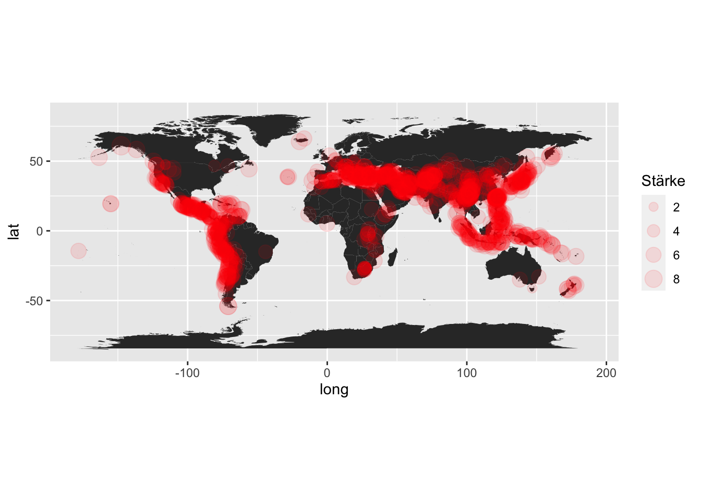

Teil 5 Geodaten beschaffen
5.1 Lernziele dieser Sitzung
Sie können…
- sich den Quellcode einer Webseite anzeigen lassen und interpretieren.
- HTML-Tabellen als Datensatz einlesen.
- Fortgeschrittene Methoden der Datenbereinigung nachvollziehen.
5.2 Vorbereitung
Am Beispiel der Küstenlängen verschiedener Länder besprechen wir Techniken der Datenerhebung/-erfassung und -visualisierung. Unser Ziel ist es, die Daten zu den Küstenlängen in einer Grafik darzustellen.
Für die folgenden Aufgaben benötigen wir die Pakete rvest und tidyverse. Zunächst müssen diese installiert und in unsere Umgebung geladen werden.
library(tidyverse)
library(rvest)5.3 Datenbeschaffung
Auf dem Internetauftritt der CIA gab es es eine Tabelle, welche die Küstenlänge (inklusive der Inseln) der einzelnen Länder enthält.
Über die Archivierungsplattform WayBackMachine ist die Seite immer noch abrufbar: https://web.archive.org/web/20190802010710/https://www.cia.gov/library/publications/the-world-factbook/fields/282.html
In einem ersten Schritt wird die URL der Tabelle der Variable url zugewiesen, sodass der Quellcode mit dem Befehl read_html() eingelesen werden kann.
url <- "https://web.archive.org/web/20190802010710/https://www.cia.gov/library/publications/the-world-factbook/fields/282.html"
reply <- read_html(url)Der Befehl html_table() ermöglicht das Auslesen aller Tabellen auf der Seite. Mithilfe des Befehls str() sehen wir, dass die Seite genau eine Tabelle enthält, welche die Informationen zu den Küstenlängen enthält.
tables <- html_table(reply, fill = TRUE)
str(tables)
## List of 1
## $ : tibble [266 × 2] (S3: tbl_df/tbl/data.frame)
## ..$ Country : chr [1:266] "Afghanistan" "Akrotiri" "Albania" "Algeria" ...
## ..$ Coastline: chr [1:266] "0 km\n (landlocked)" "56.3 km" "362 km" "998 km" ...Durch die Umformung zu einem tibble erhalten wir eine Tabelle mit den gewünschten Informationen:
as_tibble(tables[[1]])
## # A tibble: 266 x 2
## Country Coastline
## <chr> <chr>
## 1 Afghanistan "0 km\n (landlocked)"
## 2 Akrotiri "56.3 km"
## 3 Albania "362 km"
## 4 Algeria "998 km"
## 5 American Samoa "116 km"
## 6 Andorra "0 km\n (landlocked)"
## 7 Angola "1,600 km"
## 8 Anguilla "61 km"
## 9 Antarctica "17,968 km"
## 10 Antigua and Barbuda "153 km"
## # … with 256 more rowsMit pipes können wir die obigen Befehle zusammenfassen und somit das Ganze auf einmal ausführen.
"https://web.archive.org/web/20190802010710/https://www.cia.gov/library/publications/the-world-factbook/fields/282.html" %>%
read_html() %>%
html_table(fill = T) %>%
.[[1]] %>%
as_tibble() -> coast5.4 Datenformatierung
Zur Datenformatierung nutzen wir Funktionen aus dem Paket stringr. Die Spalte mit der Küstenlänge soll keinen Text, keine Einheit direkt hinter den Zahlenwerten und keine Kommata zur Trennung der Zahlenwerte enthalten.
Der Befehl str_extract()
sucht nach vorgegebenen Mustern (engl. patterns) und wählt diese aus. Diese patterns werden auch reguläre Ausdrücke (regular expressions / regex) genannt und sind eigentlich ein Thema für sich. Das Pattern [0-9,.]+ km extrahiert die Kilometerangaben.
km <- str_extract(coast$Coastline, "[0-9,.]+ km")Die ausgewählten Muster (in unserem Fall Kommata und Text) können durch den Befehl str_replace_all() gelöscht oder ersetzt werden. Wir ersetzen alle Zeichen außer Zahlen und Dezimalpunkt mit einem leeren String, so dass sie verschwinden.
str_replace_all(km, "[^0-9.]", "")
## [1] "0" "56.3" "362" "998" "116" "0" "1600"
## [8] "61" "17968" "153" "45389" "4989" "0" "68.5"
## [15] "74.1" "111866" "25760" "0" "0" "3542" "161"
## [22] "580" "97" "0" "66.5" "386" "121" "103"
## [29] "0" "0" "20" "0" "29.6" "7491" "698"
## [36] "80" "161" "354" "0" "1930" "0" "965"
## [43] "443" "402" "202080" "160" "0" "0" "6435"
## [50] "14500" "138.9" "11.1" "26" "3208" "340" "37"
## [57] "169" "120" "3095" "1290" "515" "5835" "3735"
## [64] "364" "648" "0" "7314" "27.5" "314" "148"
## [71] "1288" "2237" "2450" "307" "296" "2234" "3794"
## [78] "0" "0" "65992.9" "1288" "1117" "1129" "1250"
## [85] "4853" "2525" "28" "885" "80" "40" "310"
## [92] "2389" "539" "12" "13676" "44087" "121" "125.5"
## [99] "400" "50" "320" "350" "459" "1771" "101.9"
## [106] "0" "823" "733" "6.4" "0" "4970" "7000"
## [113] "66526" "54716" "2440" "58" "1448" "160" "273"
## [120] "7600" "1022" "124.1" "29751" "8" "70" "34"
## [127] "26" "0" "536" "3" "1143" "2495" "2413"
## [134] "0" "499" "0" "0" "498" "225" "0"
## [141] "579" "1770" "0" "90" "0" "41" "4828"
## [148] "0" "4675" "644" "0" "196.8" "370.4" "754"
## [155] "177" "9330" "6112" "15" "0" "4.1" "0"
## [162] "293.5" "40" "1835" "2470" "1572" "30" "8"
## [169] "0" "451" "2254" "15134" "910" "0" "853"
## [176] "64" "32" "0" "1482" "25148" "2092" "135663"
## [183] "1046" "1519" "14.5" "2490" "5152" "518" "0"
## [190] "2414" "36289" "51" "440" "1793" "501" "563"
## [197] "225" "37653" "0" "60" "135" "158" "58.9"
## [204] "120" "84" "403" "0" "209" "2640" "531"
## [211] "0" "491" "402" "193" "58.9" "0" "46.6"
## [218] "5313" "3025" "2798" NA "0" "17968" "4964"
## [225] "926" "1340" "853" "386" "3587" "3218" "0"
## [232] "193" "1566.3" "0" "1424" "3219" "706" "56"
## [239] "101" "419" "362" "1148" "7200" "0" "389"
## [246] "24" "0" "2782" "1318" "12429" "19924" "4.8"
## [253] "660" "0" "2528" "2800" "3444" "188" "19.3"
## [260] "129" "0" "1110" "356000" "1906" "0" "0"Auch hier kann alles in einen Befehl gepackt werden:
coast$Coastline %>%
str_extract("[0-9,.]+ km") %>%
str_replace_all("[^0-9.]", "") %>%
as.numeric() -> coast$coast_num5.5 Datenaufbereitung
Mit dem Befehl arrange() kann die Tabelle sortiert werden. Zunächst auftseigend,
coast %>%
arrange(coast_num)
## # A tibble: 266 x 3
## Country Coastline coast_num
## <chr> <chr> <dbl>
## 1 Afghanistan "0 km\n (landlocked)" 0
## 2 Andorra "0 km\n (landlocked)" 0
## 3 Armenia "0 km\n (landlocked)" 0
## 4 Austria "0 km\n (landlocked)" 0
## 5 Azerbaijan "0 km\n (landlocked); note - Azerbaijan borde… 0
## 6 Belarus "0 km\n (landlocked)" 0
## 7 Bhutan "0 km\n (landlocked)" 0
## 8 Bolivia "0 km\n (landlocked)" 0
## 9 Botswana "0 km\n (landlocked)" 0
## 10 Burkina Fa… "0 km\n (landlocked)" 0
## # … with 256 more rowsund schließlich absteigend, sodass die größten Werte an erster Stelle stehen.
coast %>%
arrange(desc(coast_num))
## # A tibble: 266 x 3
## Country Coastline coast_num
## <chr> <chr> <dbl>
## 1 World "356,000 km\n \n \n \n\n \n… 356000
## 2 Canada "202,080 km\n \n \n \n\n \n… 202080
## 3 Pacific Oce… "135,663 km" 135663
## 4 Atlantic Oc… "111,866 km" 111866
## 5 Indian Ocean "66,526 km" 66526
## 6 European Un… "65,992.9 km" 65993.
## 7 Indonesia "54,716 km" 54716
## 8 Arctic Ocean "45,389 km" 45389
## 9 Greenland "44,087 km" 44087
## 10 Russia "37,653 km" 37653
## # … with 256 more rowsBevor wir jedoch eine vollständig sortierte Liste haben, muss der Datensatz noch von falschen Einträgen gesäubert werden. Dafür benutzen wir den Befehl filter(). Wir suchen wieder nach einem bestimmten Muster (hier zum Beispiel dem Wort Ocean
) und filtern es aus dem Datensatz.
Die Grafik soll nur aus den ersten 30 Einträgen der Tabelle bestehen, welche uns der Befehl head() ausgibt.
coast %>%
arrange(desc(coast_num)) %>%
filter(!str_detect(Country, "Ocean")) %>%
filter(!Country %in% c("World", "European Union")) %>%
head(30) -> top_305.6 Datenvisualisierung
Das Balkendiagramm erhalten wir durch den ggplot
Befehl. Hierbei gibt es verschiedenste Einstellmöglichkeiten. Wichitg sind vor allem die Angabe des verwendeten Datensatzes und die Art der Grafik (ob Kartendarstellung oder Balkendiagramm). Desweiteren kann man noch Farben der Eigenschaften, eine Achsenbeschriftung u. v. m. bestimmen.
ggplot(top_30, aes(x = reorder(Country, coast_num), y=coast_num)) +
geom_bar(stat='identity', fill="darkblue") +
coord_flip() +
scale_x_discrete(NULL) +
scale_y_continuous("Küstenlinie (km)")
5.7 Aufgaben
Importieren Sie die Daten zu den tödlichen Erdbeben auf Wikipedia und formen sie diese zu einem tibble um.
"https://en.wikipedia.org/wiki/List_of_deadly_earthquakes_since_1900" %>% read_html %>% html_table(fill = T) %>% .[[5]] %>% as.tibble() -> earthquakes_rawErstellen Sie mit den erhaltenen Daten eine Karte, welche die Lage und die Stärke der Erdbeben angibt:
earthquakes_raw %>% mutate(Lat = as.numeric(Lat), Long = as.numeric(Long)) %>% mutate(magnitude_num = as.numeric(str_extract(Magnitude, "[0-9.]+"))) -> earthquakes ggplot() + geom_polygon(data = map_data("world"), aes(x = long, y = lat, group = group)) + geom_point(data = earthquakes, aes(x = Long, y = Lat, size = magnitude_num), color = "red", alpha = 0.1) + coord_quickmap() + scale_size_area("Stärke")
Wandeln Sie den Erdbeben-Datensatz in das Simple Features Format um. Laden Sie zusätzlich eine Weltkarte mit dem Paket
rnaturalearthund wandeln Sie auch diese in Simple Features um. Finden Sie außerdem einen Geodatensatz zu tektonischen Platten. Visualiseren Sie alles auf einer Welktarte (Projektion: Gall-Peters).library(sf) earthquakes %>% filter(! is.na(Long)) %>% st_as_sf(coords=c("Long", "Lat")) %>% st_set_crs(4326) -> quakesf library(rnaturalearth) ne_download(type="land", category = "physical") %>% st_as_sf() %>% st_transform('+proj=cea +lon_0=0 +x_0=0 +y_0=0 +lat_ts=45 +ellps=WGS84 +datum=WGS84 +units=m +no_defs') -> earthsf st_read("https://raw.githubusercontent.com/fraxen/tectonicplates/master/GeoJSON/PB2002_plates.json") -> plates ggplot() + geom_sf(data = earthsf, fill = "gray", color = NA) + geom_sf(size = 1, data = quakesf, color = "red", alpha = 0.1) + geom_sf(data = plates, color = "orange", fill = NA, lwd = 0.3)